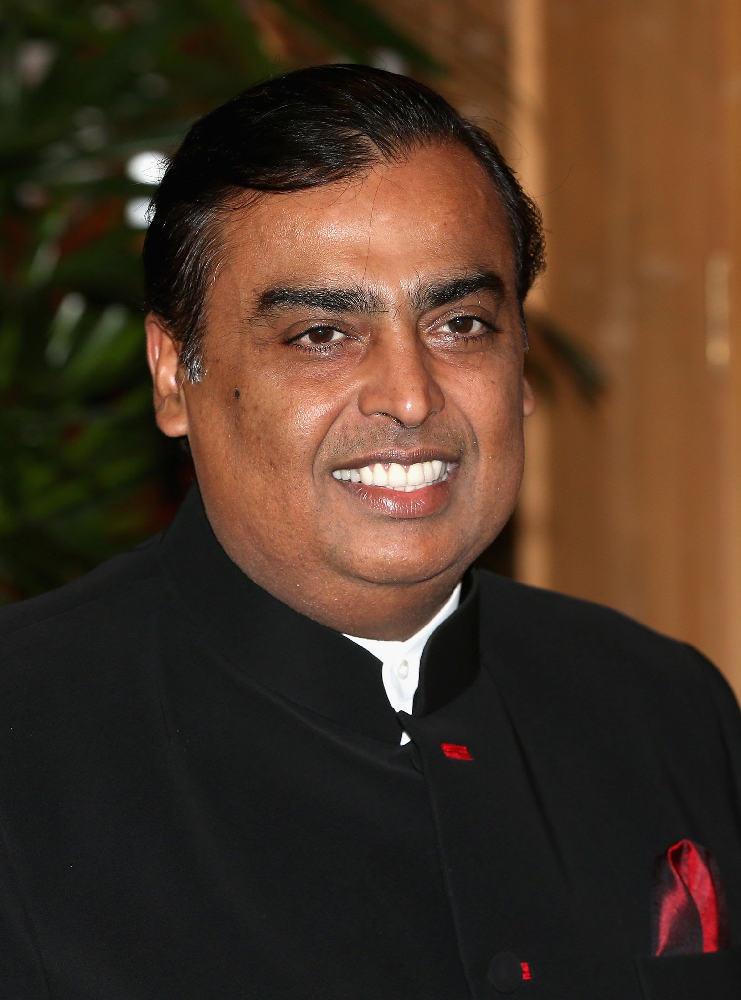

Mukesh Ambani
-

Indian businessman Mukesh Dhirubhai Ambani was born on April 19, 1957, and is a billionaire. He is the chairman and managing director of Reliance Industries Ltd. (RIL), the most valuable company by market value in India and a Fortune Global 500 company. Ambani's net worth is estimated to be US$95.7 billion as of 6 September 2022 by Forbes and Bloomberg Billionaires Index, making him the second richest person in Asia after Gautam Adani and the eighth richest person in the world.
In 1981 he started to help his father Dhirubhai Ambani run their family business, Reliance Industries Limited. By this time, it had already expanded so that it also dealt in refining and petrochemicals. The business also included products and services in the retail and telecommunications industries. Reliance Retail Ltd., another subsidiary, is also the largest retailer in India. Reliance's Jio has earned a top-five spot in the country's telecommunication services since its public launch on 5 September 2016.
Mukesh Dhirubhai Ambani was born on 19 April 1957 in the British Crown colony of Aden (present-day Yemen) into a Gujarati Hindu family to Dhirubhai Ambani and Kokilaben Ambani. He has a younger brother Anil Ambani and two sisters, Nina Bhadrashyam Kothari and Dipti Dattaraj Salgaonkar.
Ambani lived only briefly in Yemen because his father decided to move back to India in 1958 to start a trading business that focused on spices and textiles. The latter was originally named "Vimal" but later changed to "Only Vimal". His family lived in a modest two-bedroom apartment in Bhuleshwar, Mumbai until the 1970s. The family's financial status slightly improved when they moved to India but Ambani still lived in a communal society, used public transportation, and never received an allowance. Dhirubhai later purchased a 14-floor apartment block called 'Sea Wind' in Colaba, where, until recently, Ambani and his brother lived with their families on different floors.
Ambani attended the Hill Grange High School at Peddar Road, Mumbai, along with his brother and Anand Jain, who later became his close associate. After his secondary schooling, he studied at St. Xavier's College, Mumbai. He then received a BE degree in chemical engineering from the Institute of Chemical Technology. Ambani later enrolled for an MBA at Stanford University but withdrew in 1980 to help his father build Reliance, which at the time was still a small but fast-growing enterprise. His father felt that real-life skills were harnessed through experiences and not by sitting in a classroom, so he called his son back to India from Stanford to take command of a yarn manufacturing project in his company. Ambani has been quoted as saying that he was influenced by his teachers William F. Sharpe and Man Mohan Sharma because they are "the kind of professors who made you think out of the box."
Investing carrier
-
In 1981 he started to help his father Dhirubhai Ambani run their family business, Reliance Industries Limited. By this time, it had already expanded so that it also dealt in refining and petrochemicals. The business also included products and services in the retail and telecommunications industries. Reliance Retail Ltd., another subsidiary, is also the largest retailer in India. Reliance's Jio has earned a top-five spot in the country's telecommunication services since its public launch on 5 September 2016.
As of 2016, Ambani was ranked 36 and has consistently held the title of India's richest person on Forbes magazine's list for the past ten years. He is the only Indian businessman on Forbes' list of the world's most powerful people. As of October 2020, Mukesh Ambani was ranked by Forbes as the 6th-wealthiest person in the world. He surpassed Jack Ma, executive chairman of Alibaba Group, to become Asia's richest person with a net worth of $44.3 billion in July 2018. He is also the wealthiest person in the world outside North America and Europe. As of 2015, Ambani ranked fifth among India's philanthropists, according to China's Hurun Research Institute. He was appointed as a Director of Bank of America and became the first non-American to be on its board. Through Reliance, he also owns the Indian Premier League franchise Mumbai Indians and is the founder of the Indian Super League, a football league in India. In 2012, Forbes named him one of the richest sports owners in the world. He resides at the Antilia Building, one of the world's most expensive private residences with its value reaching $1 billion.
Reliance Industries Limited is an Indian multinational conglomerate company, headquartered in Mumbai. It has diverse businesses including energy, petrochemicals, natural gas, retail, telecommunications, mass media, and textiles. Reliance is one of the most profitable companies in India, the largest publicly traded company in India by market capitalisation, and the largest company in India as measured by revenue. It is also the one of the top largest employer in India with 10,00,000 employees directly and indirectly in the world. RIL has a actual market capitalisation of US$270 billion revenue $99 billion with $8.5 billion net profit and total assets $229 billion in 2022. Reliance Industries expected revenue to $150 billion $27 billion operating income with $15 billion net profit in 2023-24.
Reliance Industries, with a $104 billion (sales) market cap with holdings in petrochemicals, oil and gas, telecom, and retail, is chaired and operated by Mukesh Ambani. His late father, yarn trader Dhirubhai Ambani, established Reliance in 1966 as a little textile firm. Ambani and his younger sibling Anil divided up the family business after their father passed away in 2002. Jio, a 4G phone and broadband service launched by Reliance in 2016, set off a price war in the telecom industry. With more than 420 million subscribers now, it is getting ready to roll out 5G services. Reliance is being refocused by Ambani on renewable energy. In addition to spending $80 billion on renewable energy over the following 10 to 15 years, the firm is developing a new complex next to its refinery.
Type of Investing
The biggest advantage of growth investment strategies is that they give you exposure to the fastest growing sectors and industries. This means you are allocating capital to companies with the best chance of generating high annual returns. Investing in growth stocks is also exciting, and you get to learn about the companies that are innovating and creating the future. However, growth investing should be approached with caution. ,
Growth stocks typically have the highest valuations in the market. They need to live up to the market’s expectations to justify their valuations, or the stock price will correct – often very dramatically. If you are investing in growth stocks you need to do your homework and avoid chasing companies that are based on sentiment alone.
The simplest long-term investment strategy is buy and hold investing. Individual stocks are simply bought and held indefinitely. How well a buy and hold portfolio performs will obviously depend on the companies that are held. Although buy and holding is the simplest of investment strategies, it can be more effective than one might assume. Investors are often their own worst enemies and frequently sell their investments at the wrong time. This approach removes that problem for the equation.
There are two ways you can vastly improve the probability of success for a buy and hold portfolio. Firstly, look for stocks that are likely to be around for a long time. Stocks with a strong brand that are not likely to be disrupted are a good option. Secondly, keep your positions small. That way the picks you get wrong won’t do too much damage to your portfolio. And, the stocks that do very well will grow into substantial positions in your portfolio.
Value investing has produced the most consistent long-term returns over the last 100 years. Warren Buffett made his fortune investing in companies with reliable earnings at attractive prices. Value investors buy stocks trading at or below their intrinsic or fair value. This provides a margin of safety when the unexpected happens. The lower the valuation is when a stock is purchased, the less the company has to earn to generate a decent return in the future.
Value investors must understand financial statements to determine the true value of a company. Most cheap stocks are cheap for a reason. A value investor’s job is to identify the high quality, cheap stocks.
Momentum investing is similar to growth investing but considers the stock’s price momentum rather than earnings or revenue growth. Evidence suggests that the top performing stocks during a given period have a high probability of outperforming during subsequent periods.
Buying and selling decisions are therefore made using price action alone, though it helps to avoid small and illiquid companies. A very simple momentum strategy would invest in 10 to 20 top performing stocks and hold them for 12 months. At this point all stocks are sold and the process is repeated. More complex variations of the strategy will continuously rotate capital into stock with the highest momentum on a monthly or quarterly basis.
The objective of dividend investing, also known as income investing or yield investing, is to generate an income stream. Stocks with high dividend yields are usually very profitable but have relatively low growth rates. As a dividend investor, your job is to find companies with good yield that will be able to continue paying dividends. If the company is able to increase its dividend yield, that’s even better.
Dividend investment strategies are not just about generating income. If dividends are reinvested, a yield portfolio can experience substantial capital growth too. Companies that pay dividends are typically quite profitable and therefore also defensive during recessions